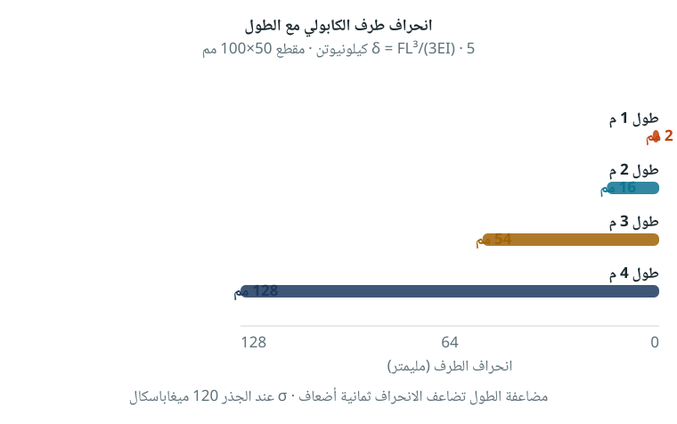

الكابولي وعزم الانحناء
Cantilever
عارضة مثبتة من طرف وحرة من الآخر؛ عزم الانحناء أعلى ما يكون عند الجذر والانحراف عند الطرف، ويحكمها شرطان منفصلان: الصلابة EI والمقاومة عند المقطع المثبت.
الكابولي عارضة مثبَّتة من طرف واحد وحرة من الآخر. تنحني تحت الحمل لأن الطرف المثبَّت يمنع الدوران فيولّد عزما مقاومًا ينتقل على طول العارضة. الانحناء الأكبر عند الطرف الحر، والإجهاد الأقصى عند الجذر، فيكون التصميم محكومًا بالجذر لا بالطرف.
هندسة الكابولي تسمح بالبروز بلا دعامة وسيطة، لذلك تُستخدم في المظلات والأرصفة المعلقة وأجنحة الطائرات وجسور الكابولي. الشرط الحسابي صلابة كافية ومقاومة كافية عند المقطع المثبت، وهما شرطان مختلفان: عارضة قوية قد تكون مرنة مهتزة، وعارضة صلبة قد تنكسر.
كيف تعمل الظاهرة؟
الحمل يخلق عزم انحناء M(x) = F(L − x) لعارضة بطول L وحمل طرفي F، أي توزيعًا خطيًّا من قيمة قصوى FL عند الجذر إلى صفر عند الطرف. العزم يولد انحناءً κ = M/(EI)، والانحناء يتراكم مرتين على الطول لإنتاج الإزاحة، ومن هنا الأس الثالث في قانون الانحراف. عند الجذر يقاوم المقطع العزم بإجهاد خطي عبر الارتفاع: σ = M·y/I، أقصاه عند السطح الخارجي y = c. القص V = F ثابت على الطول ويولّد إجهاد قص أصغر من إجهاد الانحناء في العوارض الطويلة.
العلاقة بالأرقام
δ = FL³/(3EI) لحمل طرفي، وθ = FL²/(2EI) لدوران الطرف. لمقطع فولاذي مستطيل 50 × 100 مم: I = b·h³/12 = 0.05 × 0.001/12 = 4.17×10⁻⁶ م⁴. بفولاذ E = 200 غيغاباسكال وطول 2 م وحمل 5 كيلونيوتن: δ = 5000 × 8/(3 × 200×10⁹ × 4.17×10⁻⁶) = 16 مم. الإجهاد عند الجذر σ = FL·c/I = 10000 × 0.05/4.17×10⁻⁶ = 120 ميغاباسكال، أي دون حد الخضوع لنحو نصف الفولاذ الإنشائي. ومضاعفة الطول تضاعف الإجهاد ثمانية أضعاف الانحراف.
مفاهيم متقاربة
الخلط الأول: الانحراف ليس الميل؛ الميل زاوية عند نقطة، والانحراف إزاحة. الثاني: الكابولي ليس عارضة مسنودة من الطرفين؛ السند من الطرفين يخفض الانحراف 16 مرة في الحالة المتماثلة تحت الحمل نفسه. الثالث: الصلابة هي EI وليست E وحدها؛ مضاعفة ارتفاع المقطع ترفع مقاومته ثماني مرات لأن I يتناسب مع h³. الرابع: الإجهاد لا يتوزع بالتساوي على المقطع بل خطيًّا حول المحور المحايد حيث يكون صفرًا.
حدود التطبيق
معادلة أويلر–برنولي تفترض بقاء المقاطع مستوية، ومرونة خطية، وانحرافات صغيرة دون عشر الطول، وإهمال القص. عند البروز الكبير تلزم نظرية الانحراف الكبير حيث تظهر حدود أُسّية في الحل. في العوارض القصيرة والمركّبة تصبح مشاركة القص مهمة وتلزم صيغة تيموشينكو. كما تفترض المعادلة حملًا نقطيًّا ومقطعًا ثابتًا؛ الحمل الموزّع يعطي δ = wL⁴/(8EI)، وتغيّر المقطع يستلزم تكاملًا عدديًّا. ولا تُحسب الاهتزاز ولا الانبعاج الالتوائي الجانبي وقد يحكمان قبل الإجهاد.

| الكمية | القيمة | المصدر |
|---|---|---|
| معامل يونغ للفولاذ | 200 غيغاباسكال | [2] |
| عزم القصور الذاتي لمقطع 50×100 مم | 4.17×10⁻⁶ م⁴ | [2] |
| انحراف الطرف بكابول 2 م وحمل 5 كيلونيوتن | 16 مليمتر | [1] |
| إجهاد الانحناء عند الجذر | 120 ميغاباسكال | [1] |
المصادر
- 1 Beam Stress and Deflection — The Engineering ToolBox. www.engineeringtoolbox.com/beam-stress-deflection-d_1312.html · اطُّلع عليه 2026-11-16
- 2 Young's Modulus — Tensile Modulus and Yield Strength — The Engineering ToolBox. www.engineeringtoolbox.com/young-modulus-d_417.html · اطُّلع عليه 2026-11-16
استشهد بهذا المصطلح
الصيغتان مبنيتان من بيانات الصفحة نفسها: العنوان والتاريخ ورابط النسخة المنشورة.
الكابولي وعزم الانحناء — Cantilever. (2026). ديوان المعرفة — انفراد. https://infiradev.com/diwan/terms/cantilever.html
@misc{cantilever2026,
title = {الكابولي وعزم الانحناء},
titleaddon = {Cantilever},
howpublished = {{ديوان المعرفة — انفراد} — مرجع علمي عربي},
year = {2026},
url = {https://infiradev.com/diwan/terms/cantilever.html},
urldate = {2026-11-16},
note = {مراجعة علمية: مراجعة آلية — ديوان المعرفة (روابط المصادر + عقد المحتوى + وجود الرسم) 2026-11-16}
}
راجعه: مراجعة آلية — ديوان المعرفة (روابط المصادر + عقد المحتوى + وجود الرسم) 2026-11-16 · 2026-11-16 · آخر تحديث 2026-11-16